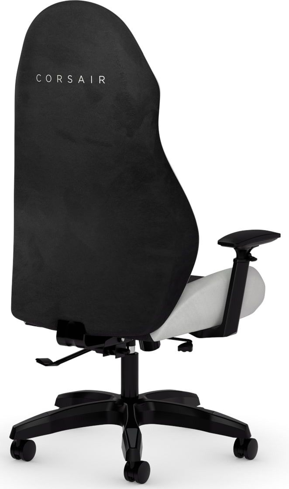
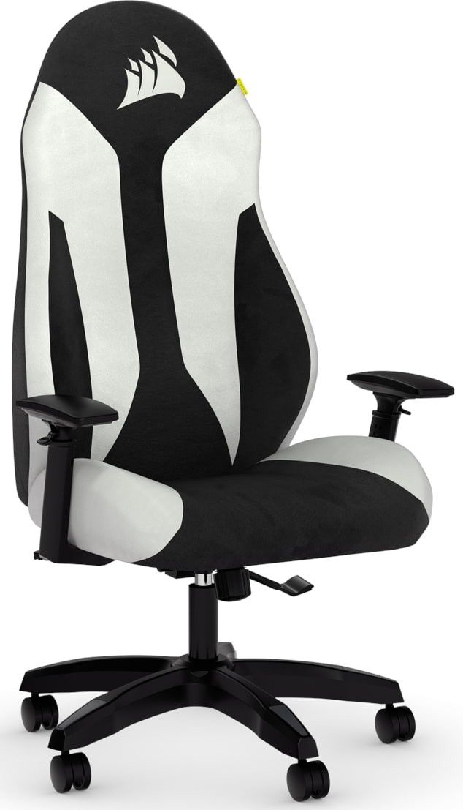
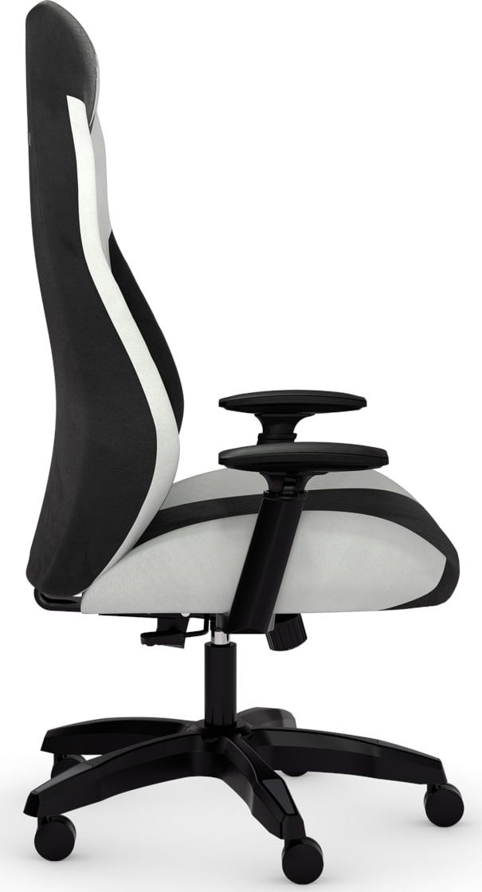
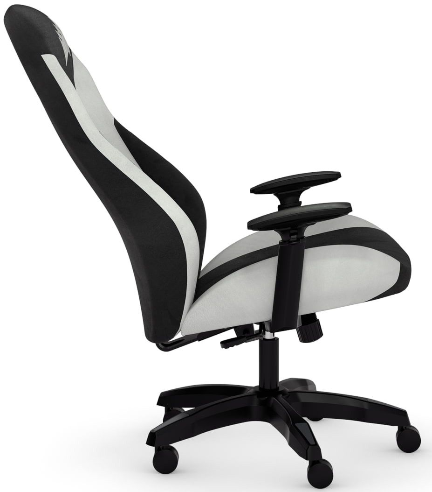

CORSAIR TC60 FABRIC Gaming Chair - Relaxed Fit - White




Price: R 8,615
Description: TC60 FABRIC Black and White
- Breathable Soft Cloth Fabric Exterior
- Built-in Foam Lumbar Support
- Seat Tilt: Up to 10°
- Recline Angle: Up to 105°
- Class 3 Gas Lift
- 60mm Dual Wheel Casters
- Weight Capacity: 120kg
- Movement Range: 100mm
- Easy Assembly Process
What's in the box
CORSAIR TC60 FABRIC Gaming Chair
User Manual
Assembly Hardware
- Breathable Soft Cloth Fabric Exterior
- Built-in Foam Lumbar Support
- Seat Tilt: Up to 10°
- Recline Angle: Up to 105°
- Class 3 Gas Lift
- 60mm Dual Wheel Casters
- Weight Capacity: 120kg
- Movement Range: 100mm
- Easy Assembly Process
What's in the box
CORSAIR TC60 FABRIC Gaming Chair
User Manual
Assembly Hardware
Show More
Stock Availability: 150 items in stock
| Weight | 7.9kg |